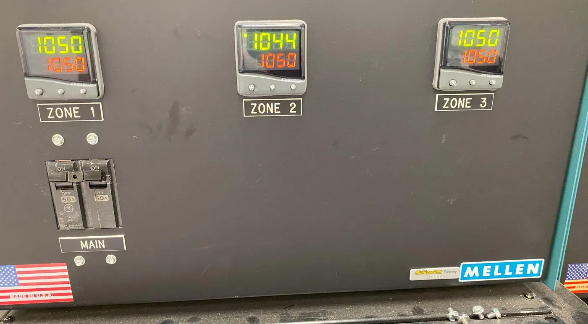

Integrated NMOS Transistor Fabrication
My first full process flow: bare wafers in, diced NMOS dies out, and a clear list of reasons the devices did not all match.
The Flow
Working in an ISO-classified cleanroom, I took wafers through two-step oxidation, photolithography, a WSi2 gate patterned with RIE, source and drain diffusion, and Cr/Au metallization (50 nm Cr, 200 nm Au), then diced them into 2 mm x 6 mm dies.
To see how the junctions responded to thermal budget, I compared two diffusion splits: 950 °C for 30 minutes and 780 °C for 4 hours.
What the Measurements Showed
- 29.2 nmGate oxide by ellipsometry
- 36.3 nmSame oxide by Filmetrics
- 30 nmTarget
Two tools disagreeing by 7 nm on the same film meant at least one of them was out of calibration, which made every later thickness number harder to trust. Even so, the electrical data pointed the same way: threshold voltage variation tracked gate oxide thickness.
Lithography had its own drift. The UV lamp intensity moved between 9 and 15 mW/cm² around a target dose of about 79 mJ/cm², so exposure was not as repeatable as it looked on paper. At the junctions, incomplete RIE oxide removal before diffusion and WSi2 slag after the 950 °C, 30 minute diffusion likely affected consistency.
Being upfront: the passivation step was not done, and I do not have quantified yield figures for this run.

What I'd Do Differently
- Calibrate the measurement tools before trusting the numbers they give.
- Document device geometry during the run. I had to estimate source and drain areas afterward.
- Hold exposure dose, RIE clearing, and diffusion conditions to tighter limits.
Tools and Techniques: Thermal Oxidation, Diffusion, UV Photolithography, RIE, Cr/Au Metallization, Ellipsometry, Filmetrics, Dicing, Electrical Testing